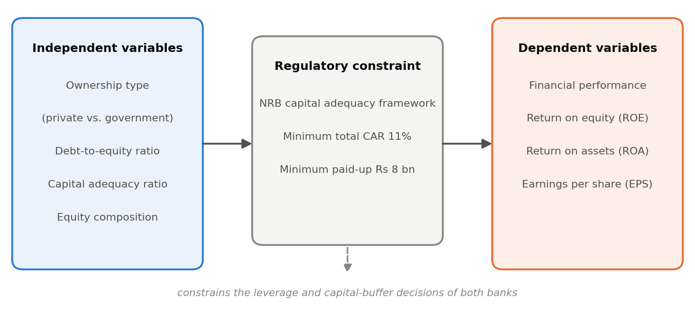

Final-year BBS Research · Methods
Two commercial banks of similar size, operating under identical Nepal Rastra Bank rules, differing on one variable: who owns them.
| Nabil Bank | Rastriya Banijya Bank | |
|---|---|---|
| Ownership | Private, listed on NEPSE | Government of Nepal (99.97%), unlisted |
| Established | 1984 | 1966 |
| Total assets (FY 2081/82) | Rs. 636.79 bn | Rs. 585.65 bn |
| Paid-up capital | Rs. 27.06 bn | Rs. 15.64 bn |
Period: FY 2077/78 – FY 2081/82. Five years, ten bank-years, bank (standalone) figures.
Three claims about Nepali banking get repeated constantly and tested rarely:
Almost every version of these claims rests on one year of unaudited data. Both shortcuts turn out to break the analysis. This study tests all three against a complete, audited, five-year record.
The period itself is a stress test, not a quiet stretch: post-COVID recovery, the FY 2078/79 liquidity squeeze, an industry-wide NPL spike, then falling interest rates. Profitability fell at both banks. Good conditions to find out whether ownership actually matters.
Ownership and capital structure as the inputs, performance as the outcome, NRB capital rules as a constraint binding on both.

Four theories generate the expectations tested here: Modigliani–Miller (1958, 1963), trade-off, pecking-order (Myers 1984), and agency cost (Jensen & Meckling 1976). The empirical literature splits — Berger & Bonaccorsi di Patti (2006) find leverage helps bank efficiency up to a point; Siddik et al. (2017) find it hurts performance. That unresolved direction is what makes an institution-level comparison worth doing.
Descriptive and analytical comparative case study. Two banks selected by purposive sampling from all "A" class commercial banks — chosen as leading exemplars of each ownership type, not as a random sample.
FY 2079/80 is the only year of the five in which Nabil is more leveraged than RBB — the result of a one-off reserve injection that lifted RBB's equity from Rs. 32.68 bn to Rs. 50.74 bn in twelve months. Sample that year alone and you conclude the private bank runs the riskier balance sheet. The full series says the opposite in four years out of five. The multi-year design is load-bearing.
All figures come from the banks' own published statements — annual reports, Q4 financial statements, Basel III disclosures, and NRB directives. No financial portals. Every figure carries a source code back to a specific document.
Nepali banks publish unaudited Q4 figures within a month of year-end. Audited figures land months later. They differ — systematically, and always in the same direction.
| Bank | Year | Unaudited profit | Audited profit | Gap |
|---|---|---|---|---|
| Nabil | FY 2079/80 | Rs. 7.52 bn | Rs. 6.40 bn | −14.9% |
| Nabil | FY 2081/82 | Rs. 7.13 bn | Rs. 5.92 bn | −16.9% |
| RBB | FY 2079/80 | Rs. 4.92 bn | Rs. 3.60 bn | −26.9% |
| RBB | FY 2081/82 | Rs. 3.82 bn | Rs. 2.84 bn | −25.7% |
Audited profit is 12–27% lower in every year for both banks. Audited CAR is 0.1–0.8 percentage points lower. Nabil's FY 2081/82 impairment charge rose 75% on audit.
This study uses audited figures exclusively — all five years, both banks. Anything built on Q4 press figures overstates profit, ROE, ROA, EPS and capital adequacy.
Several portals reported RBB's FY 2081/82 "net profit" as Rs. 5.45 bn. That figure is profit before tax. Audited profit after tax was Rs. 2.84 bn — barely half. EPS derived from it (Rs. 34.87) is wrong; the real figure is Rs. 18.14. A portal's "net profit" heading cannot be assumed to mean profit after tax.
| Variable | Formula |
|---|---|
| D/E (broad) | Total liabilities ÷ Equity |
| D/E (narrow) | (Debentures + borrowings) ÷ Equity |
| Equity-to-assets | Equity ÷ Total assets × 100 |
| CAR | Eligible capital ÷ Risk-weighted assets × 100 |
| Tier 1 ratio | Core capital ÷ Risk-weighted assets × 100 |
| ROE / ROA | Net profit after tax ÷ Equity / Total assets × 100 |
| EPS | Net profit after tax ÷ Ordinary shares |
| Credit-to-deposit | Loans to customers ÷ Deposits × 100 |
| Coefficient of variation | SD ÷ Mean × 100 |
Deposits are 87–94% of a bank's liabilities, so D/E is reported on both a broad and a narrow basis — the broad measure is dominated by depositor funding the bank never really "chose"; the narrow one isolates deliberate borrowing.
Regulatory benchmarks: CAR ≥ 11%, Tier 1 ≥ 8.5%, paid-up capital ≥ Rs. 8 bn, credit-to-deposit ≤ 90%.
Techniques: ratio analysis, year-by-year comparison, five-year trend analysis, descriptive statistics (mean, SD, CV), and Karl Pearson correlation.
With n = 5, correlation coefficients are descriptive only — they show the direction two series moved together. They are not significance tests and are never reported as such.
Three integrity checks ran on every one of the ten bank-years before any ratio was computed:
All twenty-six checks pass. Largest deviation: 0.029% on the equity decomposition, 5.08% on one EPS reconciliation (weighted-average share count after a capital change).
Check 2 catches the most common error in bank comparisons — mixing an equity figure from one quarter with a capital figure from another. A dataset that fails it cannot support ratio analysis, because the denominators are wrong.
Gaps are shown as blanks, never estimated. Nabil's Tier 1 ratio is undisclosed after FY 2078/79; NPL data is incomplete for both banks. Those cells stay empty.
Nothing was computed by hand. Every chart uses one fixed colour per bank throughout, plus marker shape and line style as a secondary encoding — so they stay readable in greyscale and to colour-vision-deficient readers. Regulatory thresholds are drawn as labelled reference lines rather than described in prose.